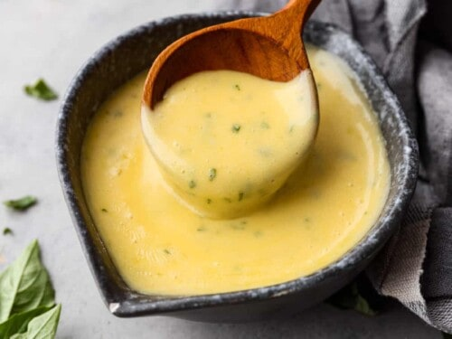

Bearnaise Sauce

Bearnaise sauce is the epitome of culinary elegance, a velvety and indulgent creation that elevates any dish it graces. Originating from the classic French mother sauce hollandaise, bearnaise boasts a rich and creamy consistency, but with the added infusion of tarragon, shallots, and vinegar, it takes on a distinctive and sophisticated flavor profile. The sauce is a delicate dance of buttery smoothness, heightened by the aromatic essence of tarragon and the subtle sweetness of shallots. It achieves the perfect balance of tanginess and richness, making it an exquisite companion for grilled meats, particularly steak. This recipe makes enough for two people. Try it out on my steak recipe!